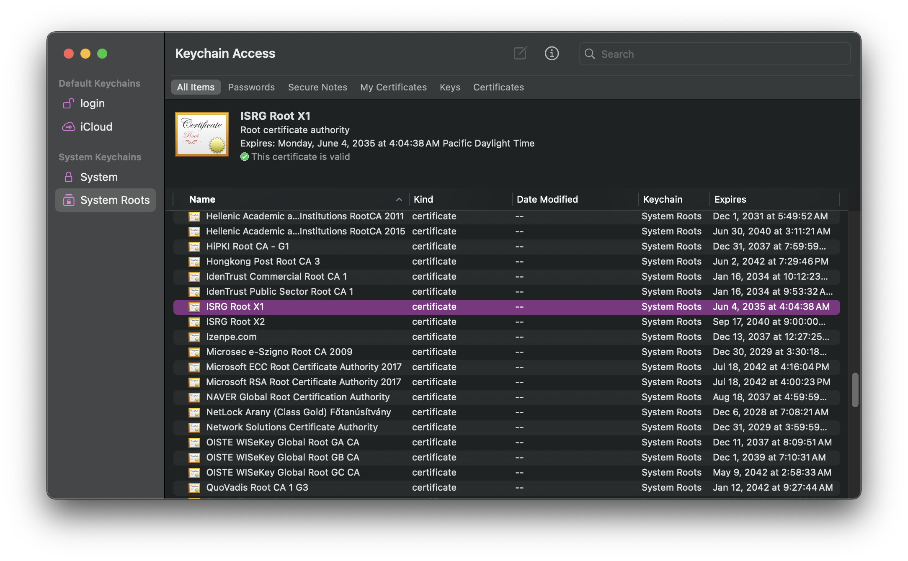
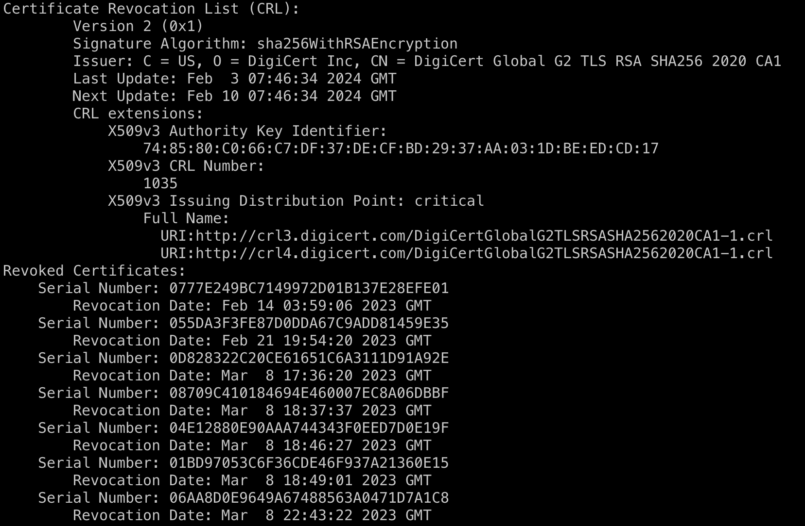
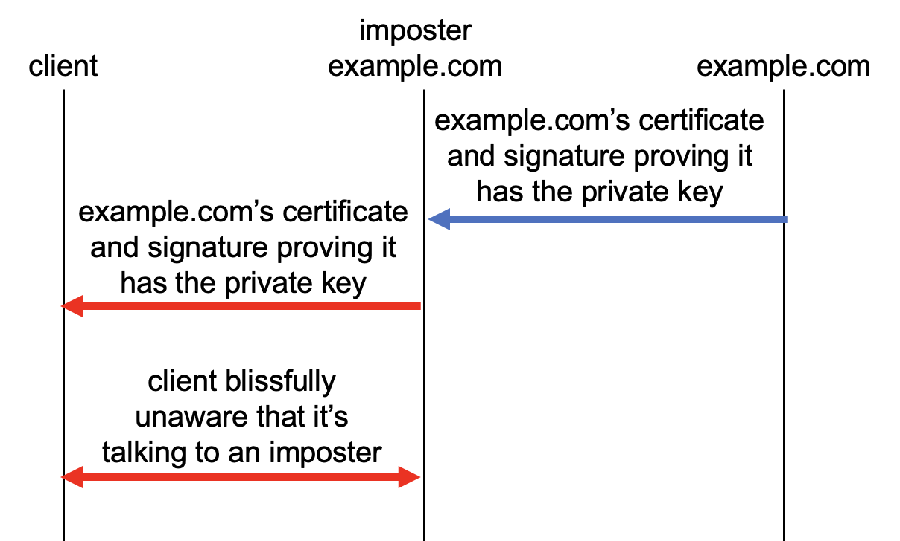
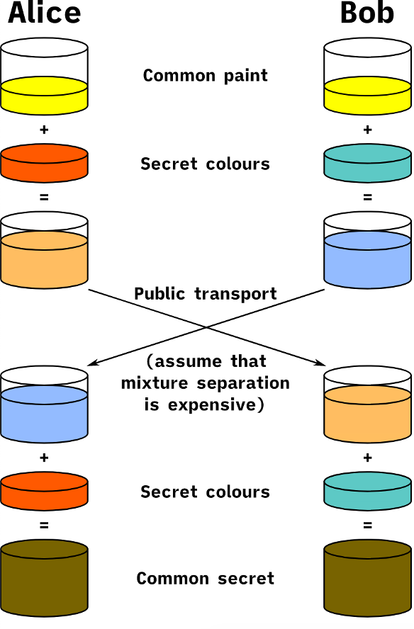
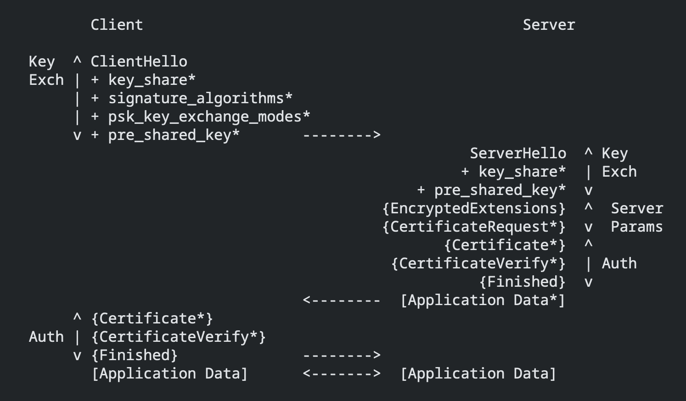

Intro to TLS Certificates
by Carrie Bartle
March 9, 2024
TL;DR: Certificates are data structures that include a public key, a digital signature, and some other data. Clients use certificates to authenticate servers during TLS handshakes.
Disclaimer: This post contains only my personal knowledge and opinions, and I'm not writing on behalf of anyone else, including the company I work for.
Contents
- What certificates are
- Digital signatures
- Why you have to get a certificate from some other company
- Why you have to worry about a certificate expiring
- Certificate revocation
- What an attacker can do with a compromised certificate
- Why an attacker can't (successfully) pretend to be your server
- How a system checks whether a certificate is valid for a particular domain name
What certificates are
TLS certificates are used to authenticate endpoints. They allow you to be reasonably confident that you're connecting to the website you think you're connecting to. Your browser received a certificate shortly before it received this sentence. You should be able to find the certificate for a website if you click one of the icons on the left side of the address bar and drill down into the menu.

This is a human-readable representation of part of a certificate, which is actually a data structure encoded in ASN.1. If you were to cat out a raw certificate in a terminal, you'd mostly see a bunch of garbage:

As you can observe from the human-readable version, a certificate contains a bunch of information like the name of the endpoint, when the certificate was created, and so on.
Like a lot of things in security, people usually aren't aware of the existence of certificates unless something goes wrong with one of them. When that happens, your browser displays a full-page error like this:

Certificates are sent during the TLS handshake, the initial, negotiation phase of a TLS connection. In a typical connection on the web, TLS lies above TCP and encrypts everything above it, which is usually HTTPS. TLS (or Transport Layer Security) began life as "SSL," or Secure Sockets Layer, at Netscape in the 1990s. It was renamed "TLS" when it became a standard at the Internet Engineering Task Force (IETF), a standards body. Because certificates took off with SSL, you'll still commonly see them referred to as "SSL certificates."
The TLS protocol specifies when and how you should send a certificate, but it leaves validating the certificate (determining whether the certificate is trustworthy) up to the client. (It also leaves this up to the server in the case of "mutual TLS," whereby the client also sends a certificate, but I'm going to focus only on server certificates in this post.)
You may be wondering: but I did a DNS query and got an IP address for example.com; how could I be talking to anything but example.com? You know how when you're in an airport and connect to their WiFi, and no matter which webpage you navigate to, you're redirected to the airport's WiFi welcome screen? That's effectively a man-in-the-middle (MITM) attack, whereby something captures the communications between you and your intended party. Instead of happily forwarding your packets on to example.com, the airport's WiFi access point directs your traffic to a server that the airport controls. An attacker could do the same thing, only the server you're directed to could be a spoof of the very website you're trying to reach—say, your bank's website. Without certificates to help you determine whether it's your bank's actual website, you could end up sending this spoofed website your banking credentials.
Digital signatures
Let's say a server you're hoping is example.com transmits a certificate to you. How can the certificate possibly prove that the entity is, in fact, example.com? Let's pretend for a moment that the certificate is just the string "I am example.com." This string isn't very convincing because any attacker could send that. What could example.com send us that would be more convincing? To answer that question, we first have to delve into public key cryptography.
You may be familiar with kids' puzzles where you encrypt something by swapping one letter with another, e.g. CAT becomes MRP if you swap C for M, A for R, etc. This is called a substitution cipher. Since you use the same key for both encryption and decryption, this key is "symmetric." (In this case, the key is the mapping from one letter to another.) There is a major problem with symmetric keys: how do you get them to your intended recipient in a secure way? You could hand them keys in person, but that's really inconvenient.
So in the 1970s, a few cryptographers came up with "public key cryptography," whereby I can give a "public key" to anyone, including malicious adversaries. If you encrypt something with my public key and send me the ciphertext, I can decrypt the ciphertext with a key I keep secret, which is called a private key.
We can also do the reverse of this operation: if you give me an arbitrary message, I can perform the decryption algorithm with my private key on that message, then send you the resulting ciphertext (which we call a digital signature). Then you can perform the encryption algorithm with my public key on the signature to see if the result matches the unencrypted message. If it matches, you can be reasonably sure that I possess the private key associated with the public key I gave you. This scenario provides exactly what we need for example.com: a way to associate a message with the identity of its sender, just like a regular, hand-written signature.
Imagine you have example.com's public key, and you connect to example.com. During the connection, you send a message, and the server you're connecting to sends back a digital signature of that message. You use the public key to verify that the digital signature is valid, and voilà! You can reassure yourself that the entity you've connected to has example.com's private key and thus is most likely indeed example.com.
Why you have to get a certificate from some other company
However, public keys actually have a similar problem as symmetric keys: if you send me your public key, how do I know an attacker isn't intercepting the message and replacing your public key with the attacker's?
It would be really annoying to have to meet with all the owners of the various websites you want to visit to get their public keys. So what if there were someone who was willing to do that for you? What if a trusted third party gave you their public key, and they flew all around the world signing website owners' public keys, so that when you connected to example.com, you got the following:
- example.com's public key,
- example.com's digital signature over an arbitrary message you gave them, and
- the trusted third party's digital signature over example.com's public key.
You would then be able to:
- Verify with the trusted third party's public key that it signed example.com's public key.
- Verify that the entity you're communicating with possesses example.com's private key.
However, this would obviously still be very annoying for both the trusted third party and all the website owners. The way that these third parties (certificate authorities, or CAs) check whether something has a particular private key and controls a domain is usually automated: an entity claiming to be example.com sends a Certificate Signing Request (or CSR) to a CA, which includes the domain name and example.com's public key. To prove that the entity has control over example.com, the CA sends a long, arbitrary string to the entity, then the CA checks whether that entity placed that string at a particular URL or in a DNS record that example.com is expected to have control over. This process is called "domain validation." If everything checks out, the CA generates a certificate based on the information in the CSR and sends the requester the certificate.
You may be wondering: if a CA can check whether something is example.com, why couldn't I do that myself in the first place? If our threat model includes the fact that an attacker may have control over your network, there's no way for you to do this check and have any confidence that you're actually checking the real example.com. We assume that a CA, however, is not getting MITM'd when they validate a website's domain. This is admittedly a pretty big assumption, which is why some CAs check DNS records from several different vantage points.
Some certificate authorities also do additional validation like "organization validation," whereby they attempt to check whether the entity that's requesting the certificate is the organization they claim to be in a human, real-world sense. However, this additional validation is of dubious value.
Having to deal with a bunch of public keys can get rather cumbersome: they're intentionally as random as possible and contain no information like whom they belong to. Certificates solve this problem: in addition to a public key, they contain the name of the entity associated with that public key, the name of the CA that signed the certificate, and the CA's signature over all that information. It's called a certificate because it certifies something: server certificates certify that a CA checked that the hosts at the domain(s) listed in the certificate have the private key associated with the public key in the certificate. And like certificates in the real world, this certificate has a signature.
The CA gives you their public key in the form of a certificate as well, but in this case, it's "self-signed," meaning the signature attached to it was made by the private key associated with the public key in the certificate. This type of certificate is called a "root" certificate because it forms a root of trust: nothing vouches for the trustworthiness of this certificate but your faith in it, and everything that certificate vouches for depends on the trustworthiness of that certificate. This means that you want to get this root in the most secure manner possible. They're usually baked right into operating systems and browsers. If you have macOS, you can open Keychain Access and see all the roots your system trusts by default.
You may be thinking, "That's a lot of trust to put in some company I've never heard of." If so, you are correct. Who you're really trusting are the root programs of the various operating systems and browsers you use, and they take great pains to determine whether or not they should include a particular root in their systems based on the trustworthiness and past behavior of the CA that owns it.
The private keys of root certificates, the foundations of your trust, are obviously extremely sensitive material, so part of the requirements that the CA/B Forum, a consortium of CAs and browsers, mandates for publicly trusted certificates is the secure management of roots. Roots are created in a meticulous and excitingly named process called a signing ceremony, which involves generating the root key in a tamper-proof Hardware Security Module.
The more you use something, the more likely it is to be compromised, so you really don't want to use a root's private key to sign a bunch of websites' keys all the time. Ideally, you would stick that thing in a safe somewhere and never use it. So CAs have their root sign just a few certificates known as "intermediate" certificates, and it's these certificates that sign new certificates for websites that request them. Sometimes these certificates generate yet another certificate off the first intermediate, and that's the one that signs websites' certificates. Either way, this forms a "chain" from the root to the server's certificate, which is called a "leaf." (Why we don't call intermediates "branches" remains a mystery.)
This whole system of CAs and root distribution is referred to as public key infrastructure (PKI). If you're thinking, "There has to be a better way to do this," people did experiment with other ways of distributing trust, with mixed results.
Why you have to worry about a certificate expiring
In addition to making sure that a certificate chains to a trusted root, your OS or browser also performs a bunch of other checks as well. One of them is whether the certificate has expired or not, which was the cause of the certificate error I showed above. (That error was from badssl.com, which is an awesome website with endpoints that are deliberately misconfigured with certificates that are invalid for one reason or another.)
As I mentioned above, the more you use something, the more likely it is to have been compromised, whether through error or malice, so you don't want to use the same certificate for very long. Prior to 2018, certificates were allowed to be valid for a whopping three years, but the CA/B Forum has narrowed this window over time, to the point where the maximum validity period is currently (as of February 2024) 398 days. In 2023, Google recommended further narrowing this window to 90 days, which is the validity period of free certificates from Let's Encrypt, which, at the time of this writing, issues the most certificates per year in the world of any CA, by far. The reason for these shorter validity periods is that if your 1-year certificate is compromised, say, 4 months into its validity, an attacker could pretend to be your server for a whole 8 months.
Certificate revocation
You may be thinking, "Just revoke it." Certificate revocation is a process by which a certificate owner notifies the CA that their certificate has been compromised. However, you would only revoke a certificate if you were aware that it had been compromised, and that isn't always the case. Shorter certificate lifetimes guarantee that a compromised certificate will only be usable without an error message for a short while, even if you're totally unaware that it's been compromised.
Initially, systems would download Certificate Revocation Lists (CRLs) from endpoints listed in the certificate:
If the certificate is listed in the CRL, it's considered invalid and the client terminates the connection.
However, CRLs became so massive (the one partially shown above is over 6MBs) that it became infeasible to download one every time you wanted to check whether a certificate had been revoked. So CAs created Online Certificate Status Protocol (OCSP), whereby a system can check the revocation status of just one certificate. This has privacy implications since it requires telling a CA which websites you're visiting.
Moreover, your connection to an OCSP responder can go awry, but browsers don't want that to stop you from visiting the website, so they "fail open" and allow you to connect to the website. This makes OCSP rather useless, because if an attacker wants you to connect to a server with a revoked certificate, all they have to do is block your requests to OCSP and CRL endpoints. To solve this problem, people came up with something called OCSP stapling, but as you can see, solving this problem is getting more and more complicated, which is another reason the industry is just pushing for shorter certificate lifetimes.
What an attacker can do with a compromised certificate
So what could an attacker do with your certificate's compromised private key? They could, of course, validly authenticate themselves to users as your website. However, if your servers are using the currently recommended TLS ciphersuites, the attacker could not decrypt your server's traffic. This is because, with those ciphersuites, the certificate is used only for authentication, and the parties create brand new symmetric keys for encryption in each connection. This is to ensure "forward secrecy," i.e. even if an attacker compromises a long-lived key like a certificate's private key, they can't decrypt any encrypted communications they may have intercepted in the past.
However, if you're using a ciphersuite that doesn't guarantee forward secrecy, such as any ciphersuite that uses the RSA key exchange, the client uses the server's certificate's public key to encrypt secret material that's used to generate the keys used for encryption. This is one of the reasons it's best to use only TLS 1.3 if you can. TLS 1.2 provides many footguns, including turning encryption off completely. (1.3 also has an additional bonus of being faster since the handshake has half as many round trips as 1.2.)
Why an attacker can't (successfully) pretend to be your server
You'd be right to wonder: "Wait, even if a server authenticates itself to me with its certificate, how do I know the rest of its communications are actually from that server? What if an attacker is just forwarding me both example.com's certificate and the signature that proves they have the private key?"
This is because the brand new keys the client and server negotiated for encrypting this session are cryptographically "bound" to the certificate's private key. To generate these symmetric encryption keys, the client and server use what's called an "ephemeral" Diffie-Hellman key exchange, since the resulting key doesn't last very long. The best way I know of to explain the Diffie-Hellman key exchange at a high level is this image from Wikipedia, which shows that two parties can come up with the same color of paint if they exchange different paint colors.
{kind=link}
The actual exchange is the mathematical equivalent of this, whereby the parties exchange public keys (which in this context are also known as "key shares") that are "mixed" to create the same symmetric key. The server sends the client its key share, then its certificate, then the signature over the key share and certificate, which, in a nice two birds/one stone situation, both proves that it has the private key (in what's called the CertificateVerify) and also "binds" the certificate's public key to the key share.
The TLS 1.3 protocol in a super helpful diagram.
If the attacker intercepted example.com's key share and sent the client its own, the client would get an error when it tried to validate the signature over the certificate and the imposter's key share.
How a system checks whether a certificate is valid for a particular domain name
There's one more thing you might need to know about certificates: something else systems check is whether the name of the website you're attempting to connect to is listed on the certificate. This might seem like a "duh" thing to mention, but there are some subtleties that make it a bit more complicated than a string equality check. First, your browser checks whether the domain you entered into the browser's address bar or in the link you clicked is in the "Subject Alternative Names" (SANs). The SANs are usually a list of DNS names but can also include IP addresses.
Certs with more than one SAN are called "multi-domain" certificates and allow you to have the same cert on multiple different hosts.
Your browser ignores the "Common Name" field, which lists one of the SANs and is there just for human convenience, since it would be ridiculous to have to say "www.example.org, example.net, example.edu, example.com, example.org" when referring to a certificate.
But what if you're constantly setting up new endpoints with subdomains like foo.example.com, bar.example.com, etc., and it would be really inconvenient to have to get a certificate for each one? In that case, you might want what's called a "wildcard" certificate, which includes a SAN with an asterisk in the left-most position like so: *.example.com. Similar to regular expressions, the asterisk is understood to match with anything, like a wildcard in a card game. However, the asterisk can only match one component in the DNS name, not any number of components. So https://wrong.host.badssl.com serves a cert that's invalid for its DNS name because its SANs include only badssl.com and *.badssl.com, not *.host.badssl.com.
Wildcard certificates and multi-domain certificates are more convenient than single-domain certs since you can use the same cert across several different hosts, but they have a wider "blast radius": the amount of damage a compromised key can do. If their private key is compromised, an attacker can pose as many hosts rather than just one. If you find yourself wanting a wildcard cert, it'll be up to you to decide whether that trade-off is worth it.
And that concludes the basics on certificates. Email me at carrickdb at gmail if you have any requests for additional topics to go over or to let me know if I got something wrong.
Acknowledgements: Big thanks to Jon Callas and Aarthi Sampath for reviewing this blog post. Any errors, however, are mine.